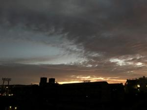
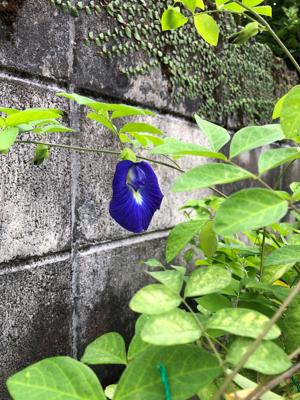

うるがいの話 ある日
最新: ＳＭＳ詐欺メールうるがいとは 前提知識です
カニの画像をクリックすると『うるがいの話』サイトを表示します|
|
【うるがいの話】 うるがい(ｳﾙｶﾞｲ urugai)とは、『もずくがに』の名前でとても大きくなります。 |
|---|---|
|
|
【Got cat カミマヤーの話】 たながー（ﾀﾅｶﾞｰtanagaa）とは手長えびのことで、何種類かあり大きいのは車 エビぐらいになります。 |

|
【ぶながぁの話】 ぶながー(bunagaa)とは、赤い髪の毛、赤い身体、そして身長は１ｍ２０ｃｍ ぐらい、川の蟹を食べているの目撃された。場所は沖縄県国頭郡大宜味村のと ある村僕の隣近所に住んでいる爺さんから、聞いた話です。 |
|
|
【ギーマの話】 ギーマ(giima)とは、山原の里山に咲くスズランに似た、 花を付けます。実は食べられます、 気が付くと口の周りが紫になっています。 |
2021年11月08日 (月）ＳＭＳ詐欺メール
16:05
 
きのうの夜、詐欺メールが着信した。
『auからの重大なお知らせ
ご利用金額が設定した金額を超えました。ご確認が必要です。』
ん！、思わず、メールの中にあったアドレスを押してしまった・・・その時点
でアプリを閉じる。ネットを調べてみる、頻発しているようだ。外部メールで
のメールではそういうのは無くなってきているが、ＳＭＳは電話番号をランダ
ムにしようして簡単に詐欺メールを送れるので注意がいる。といいつつこの前
ＪＡＬのサイトへのログインも二段形式になり、ＳＭＳで確認番号を送りつけ
るようになったし、体が反応してしまう。
国民年金 16,610円
国民保険料 20,500円
合計 37,110円
貯金を使い果たしたと言っていた子供の支払いを郵便局の窓口で支払う。国民
保険料の支払いの紙に子供住所が記載されているので、コンビニへは行かず郵
便局でとヨメに言われた。コンビニではあっと言う間に終わるが、郵便局では
振り込み用紙に名前と電話番号を書き込み待つこと５分、次は絶対コンビニで
と思った。今回は、私の毎月の保険料５万６千３９２円（ヨメは扶養扱い）の
振り込みを、ゆうちょのＡＴＭ利用のついでである。それにしても無収入の人
には大きい額である。きのう、振り込み用紙を持ってきた子供とお金の話をし
た、診療内科から就職活動は来年から予定でと言われている、そうなると年明
けハローワークで手続きをはじめ、失業保険の給付を貰えるのは２月以降か。
もらえても、給付額で生活できるかと。子供の知人は、本土で仕事にいったり
、危ないことをしているとのこと。親の家に同居している人は余裕があるみた
いだけどと言われる。でも、その生活はいつまで、次仕事するときは１６万だ
とギリギリ１８万だと少し余裕とか、でもハローワークの求人ではギリギリの
１６万のところしかないらしい（子供が働ける条件だと）。あと派遣は、派遣
会社がマージンをとるので可哀想（やめた会社で働いていた派遣の人の情報）
この前は派遣でも勤めようかと言っていたが、今は契約社員がいいと。この前
の衆議院選挙で最低賃金を上げろ、「分配選挙」、なるほど。話は変わるが、
この前おもろまち近辺を車を走らせると、『奨学金全額免除』とかの選挙用語
が貼られていた屋根付きの３輪バイク（わ番号）をのっているヘルメット無し
の人を、信号待ちで隣にいたので見ると落選した議員だった。まだ、三線は上
手く引けないが、楽譜ソフトでの登録はバッチリである。
『ベーベーヌぬサグサ（三線演奏）（ユーチューブ）』 １分４４秒
三線演奏